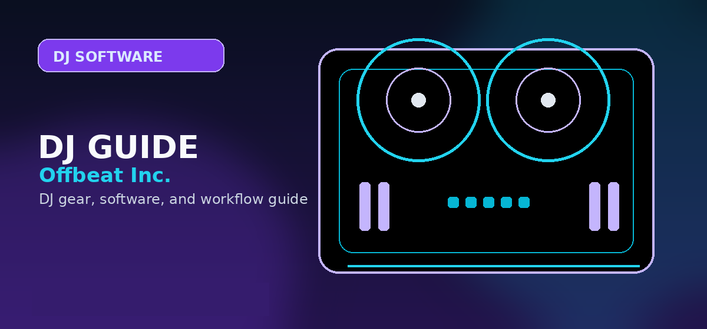

rekordbox vs Serato: Which DJ Software Should You Use?
A rebuilt pairwise decision guide comparing rekordbox and Serato by hardware path, club prep, scratch workflow, streaming limits, and beginner fit.

A rebuilt pairwise decision guide comparing rekordbox and Serato by hardware path, club prep, scratch workflow, streaming limits, and beginner fit.
Fast verdict
Choose rekordbox if the you want AlphaTheta/Pioneer continuity, club-style library preparation, USB export habits, and a clean path from beginner controller to booth-style standalone or CDJ/XDJ practice. Choose Serato if the you want open-format sets, scratch layouts, performance pads, motorized controllers, and a hardware-unlock ecosystem built around live controller performance.
| Decision factor | rekordbox | Serato |
|---|---|---|
| Best for | Club prep, AlphaTheta/Pioneer continuity, rekordbox libraries | Open-format sets, scratch performance, pad-heavy controller workflows |
| Hardware path | DDJ-FLX4 → DDJ-GRV6 → DDJ-FLX10 → XDJ-AZ/CDJ-style systems | Mixtrack/REV5 → RANE ONE MKII/Performer → battle or motorized Serato rigs |
| Beginner recommendation | Best if the goal is club-style DJing or AlphaTheta gear | Best if the goal is open-format, hip-hop, scratch, or Serato-specific controllers |
| Streaming angle | Spotify/Apple Music support exists where supported, with limitations | Spotify/Apple Music support exists where supported, with limitations |
| Big risk | Subscription/plan confusion and less scratch-oriented identity | Less direct club USB-prep path and hardware unlock complexity |
Controller pairings
The software decision should immediately route into hardware. rekordbox buyers should compare FLX4, GRV6, FLX10, and XDJ-AZ. Serato buyers should compare Mixtrack, REV5, RANE ONE MKII, RANE Performer, and FLX10 if they need dual-platform flexibility.
Which one should most beginners choose?
If the beginner has no genre or performance preference, start with a controller that keeps both paths open, such as the FLX4. After a month of real practice, the decision becomes obvious: rekordbox feels better for organized library prep and the AlphaTheta/Pioneer path; Serato feels better for open-format performance, scratch-oriented layouts, and controller-first expression.
Library, hardware, and gig consequences
The important difference is what happens after the first month. rekordbox nudges you toward organized playlists, prepared beatgrids, hot cues, memory cues, USB exports, and hardware continuity with AlphaTheta/Pioneer DJ systems. Serato nudges you toward crates, laptop/controller performance, quick requests, scratch-friendly layouts, stems, and hardware that unlocks or expands the Serato workflow.
If you expect to play on venue CDJs or XDJ-style systems without your own controller, rekordbox is usually the safer long-term base. If you expect to bring your controller, play open-format events, scratch, use a battle mixer, or move between controller brands, Serato often feels more direct. The wrong choice is not fatal, but switching later means rebuilding habits, checking library transfer tools, and retesting every controller and streaming workflow.
How to use this guide in a real DJ setup
Before changing gear, software, or workflow, connect the recommendation to an actual use case: home practice, recorded mixes, streaming, mobile events, club preparation, or production crossover. A choice that looks best on paper can still be wrong if it adds setup friction or does not match the way you will play.
The safest workflow is to test the setup exactly as you will use it, then document the cable path, software version, library source, and backup plan. That prevents most of the avoidable failures that happen when DJs buy the right-looking tool but never validate the whole system.
Library and hardware migration planning
The expensive part of changing DJ software is not the subscription. It is rebuilding cues, grids, playlists, crate logic, streaming habits, and controller muscle memory.
- Choose rekordbox if you want Pioneer/AlphaTheta continuity, USB export habits, club preparation, and a cleaner path into CDJs or all-in-one systems.
- Choose Serato if you want a wider performance-controller ecosystem, stronger scratch/open-format culture, and familiar workflows on RANE, Numark, Pioneer DJ, and Hercules controllers.
- Avoid switching repeatedly during the first year. Pick one library system, learn it deeply, and keep backups of playlists and analysis data.
Official product and support pages
Use these official pages to confirm current specifications, software compatibility, and support details before buying.
Frequently Asked Questions
Is rekordbox better than Serato?
rekordbox is better for AlphaTheta/Pioneer continuity and club-prep habits. Serato is better for open-format, scratch, and performance-controller workflows.
Can one controller use both rekordbox and Serato?
Some can, including important crossover models, but support and unlock terms vary. Check the compatibility matrix before buying.
Which is better for beginners?
Use the intended path. Club-oriented beginners should lean rekordbox; scratch/open-format beginners should lean Serato; uncertain beginners should buy a controller that keeps both options open.
What should I check before choosing DJ software?
Check controller compatibility, library tools, streaming support, stem features, recording limits, subscription cost, and whether the software matches the venues or hardware you expect to use.
Can I start with free DJ software?
Yes, but free versions often restrict hardware, recording, effects, or advanced library features. Use free software to learn basics, then upgrade when the limitations slow you down.